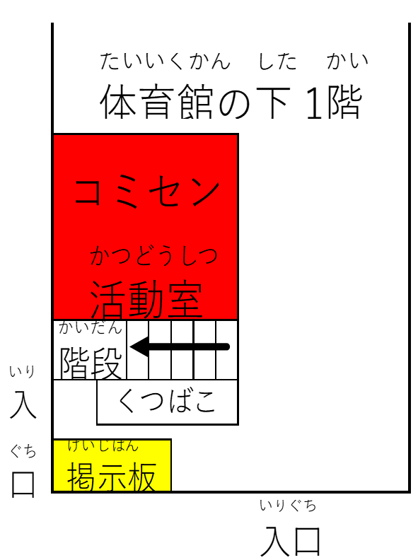

"Navigator"
SC21和坂 将棋教室 開催予定日
お知らせ
当面の活動日
場所 和坂小コミセン活動室
078-928-4110
時間 10:00 ～ 11:30
対象 小学生(※)
体験・見学希望の方は事前連絡の必要はありません。
★HPで日程を更新していても、使用端末での情報更新のタイミングがずれて最新の情報が確認できない場合もありますのでご承知ください。
※将棋を学習したい大人、子どもと対戦できる大人の参加も可能です。
和坂小学校の体育館に上がる階段の反対側(下の配置図を参照)にSC21和坂の掲示板があり、そこに日程表を貼っています。
